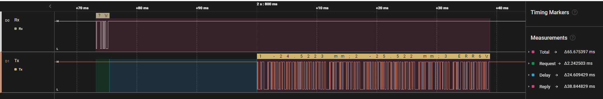
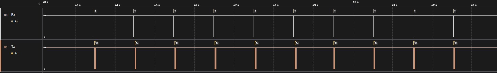
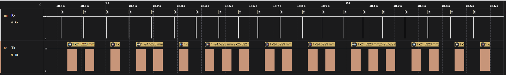
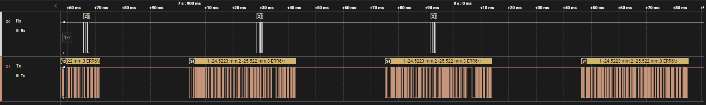
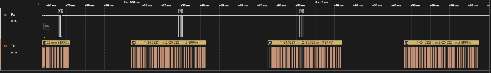
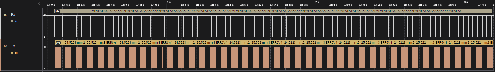
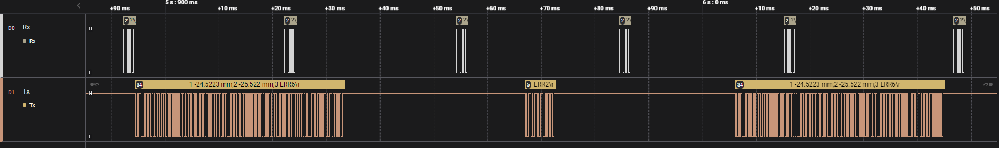
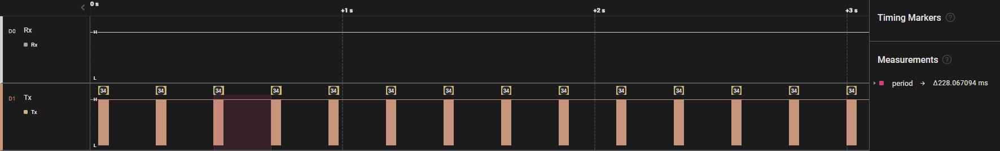

HOME<--->PDF
C1202 USB Datenanfrage Analyse

1. Messaufbau:
1.1. C1202 mit FW 1.1.0.0
1.2. Digimatic Kabel: DK-U1
1.3. Messung: Saleae logic Pro 8
1.4. Empfänger/Anförderung: PC06-451
2. Interface Beschreibung
\essfs01\Abteilungen\Benutzergruppen\Firmware_Software\Interface Beschreibung Datenkabel DK-U1\Release\20220926_DK-U1 Instruction Set.xlsm
3. Messungen:
3.1. Einzelantwort für '?':
- Anzahl Merkmale: 1, 2 oder 3
- Toleranz: Nein
- Warngrenzen: Nein
- Anforderung: Befehl ('?')
- Daten Senden: Parallel
- Gesamtzeit: 60ms

3.2. Einzelantwort für 'M1?':
- Anzahl Merkmale: 1, 2 oder 3
- Toleranz: Nein
- Warngrenzen: Nein
- Anforderung: Befehl ('M1?')
- Daten Senden: Parallel
- Gesamtzeit: 40ms

3.3. Zyklischeanforderung für alle Merkmale:
- 1000ms

- 500ms

- 200ms

- 100ms

- 80ms

- 50ms
 

- 20ms


- 10ms
3.4. Zyklischeanforderung für Einzelmerkmal: ('M1')
- 200ms:


- 100ms:

- 50ms:

- 20ms:

- 10ms:

3.5. Automatische senden für Zeit gesteuerte Messung
- Schnellste Einstellung ist: 200ms (Messdauer=0,1 sek, Pausendauer=0,1 sek):

 Nachrichtlänge: ca. 40ms
Nachrichtlänge: ca. 40ms
4. Ergebnis:
- Ausgabewerte sind plausiebel mit aktuellem Werten.
- Limietireungsfaktor ist baud rate: 9600 bps
- Zeiten:
- Kurze Anfrage ('?'): ca 2ms
- Länge Anfrage ('Mx?'): ca 4ms
- Antwort verzügerung: ca 20ms
- Nachricht ca 15-40ms
- Frage-Antwort: 40-60ms
- Maxmimale Anforederungsrate: 100ms (10 Werte pro sekunde)
5. Zeitverkürzungs möglichkeiten (Mehr Data Anfordern):
- Einzelwert Anfragen: 'Mx?'
- Baudrate erhühren, (Antwortzeit ca. 30ms)
- digimatic Schnittstelle nutzen
Source code for testing
Python / Jupyter Notebook
import serial
import time
import ipywidgets as widgets
dataReq = '?\r'.encode('ASCII')
ser = serial.Serial()
ser.baudrate = 9600
ser.port = 'COM5'
ser.bytesize = 7
ser.parity = 'E'
ser.stopbits = 2
ser.timeout = 0
def runtest(time_ms, request_qty):
ser.open()
print("start: " + str(time_ms/1000) + " s ...")
for i in range(request_qty):
ser.write(dataReq)
time.sleep(time_ms/1000)
print("finished")
ser.close()
widgets.interact_manual(runtest, time_ms=widgets.FloatSlider(min=10, max=1000, step=10), request_qty=widgets.IntSlider(min=10, max=100, step=10));